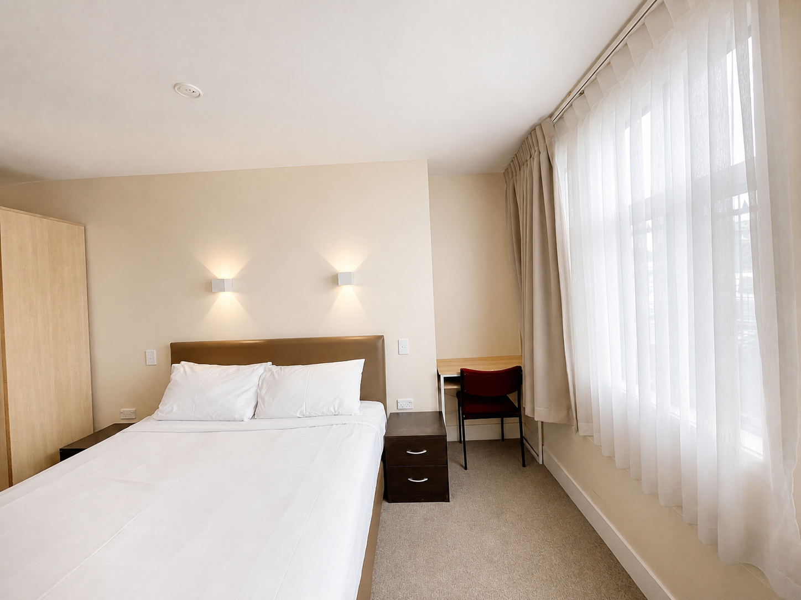
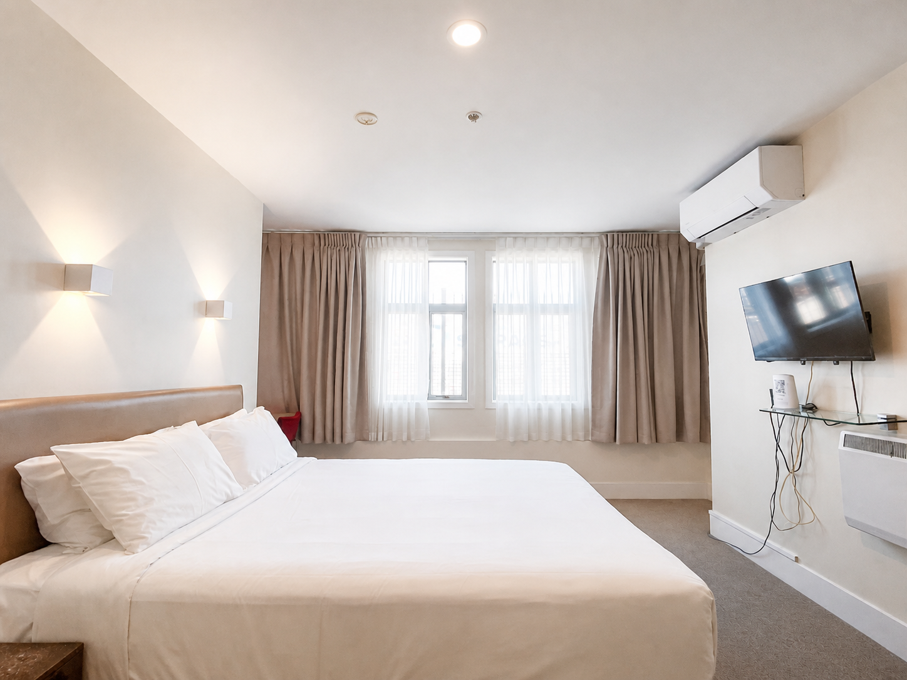
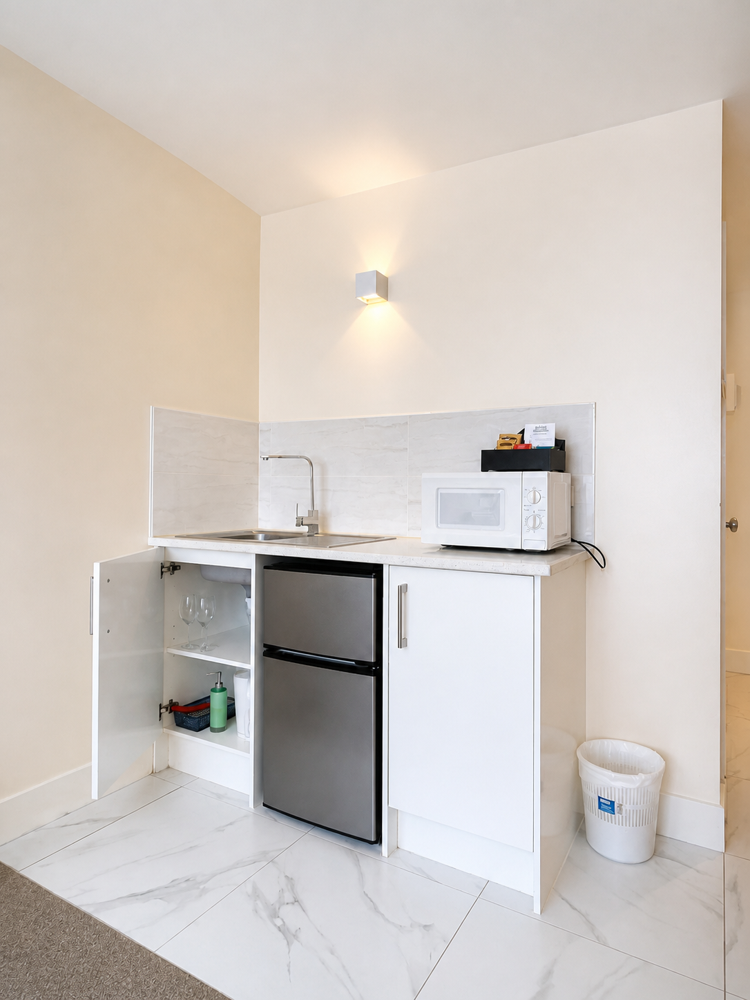
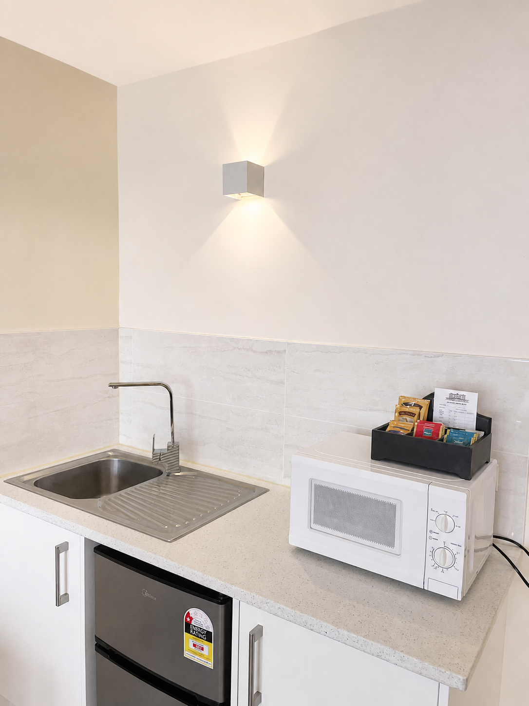
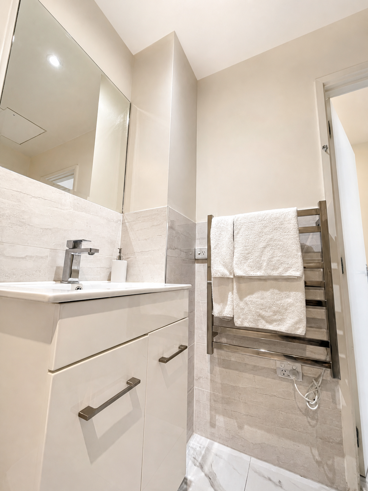
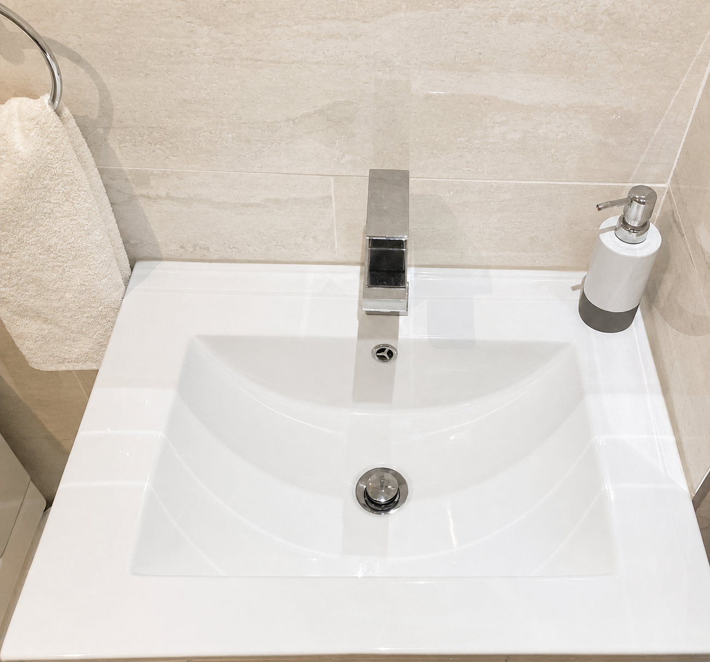
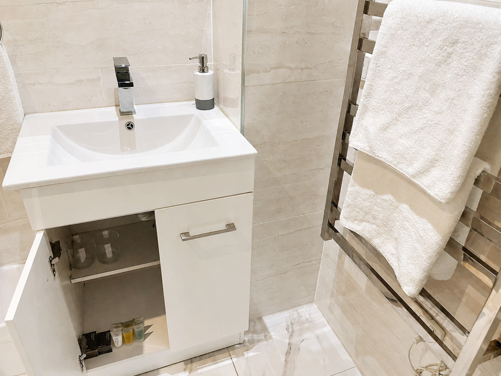

Private room · Maximum 2 guests
Standard Double
A straightforward private room for two, with a double bed, air conditioning and the practical comforts needed for a short Auckland stay.
- Bed
- 1 double bed
- Size
- To be confirmed
- Guests
- 2
- View
- Varies by room













Room features
- Double bed
- Air conditioning
- Flat-screen television
- Free fibre Wi-Fi
- Minibar
- Free toiletries
Questions
How many guests can stay?
The Standard Double accommodates up to two guests.
Does every room have the same view?
No. Outlook and window position vary by room; ask the front desk if this is important to you.
Is the bathroom private?
Bathroom arrangements are being confirmed for publication. Please call before booking.
Book direct
Ready to stay?
Check your dates or call the front desk with questions.